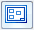

Block Table command bar
- Table Style
-
Lists and applies the available table styles.
See the Help topic, Table styles.
- Block Table Selection Method
-
Specifies the source of the blocks used to create the block table:
- By Active Sheet
-
Automatically selects and creates a table from all blocks that are visible on the active sheet. The active sheet can be a working sheet, a background sheet, or the 2D Model sheet.
- By Drawing View
-
Creates a table from all of the blocks in the selected 2D view or 2D model view.
All blocks in the view are selected; they do not have to be visible.
- By User Selection
-
Creates a table from the blocks you manually select on the active sheet.
This option is useful when you want to create a table from a subset of blocks on a drawing.
- Blocks in View

-
This option is available only when the Block Table Selection Method is set to By Drawing View.
-
When the Blocks in View option is selected, specifies that only the blocks that are visible in the view are used to generate the block table.
Example:If you select a 2D model view on the active sheet, and the Blocks in View option is selected, then only the visible blocks in the 2D model view are referenced in the table.
-
When deselected, all of the blocks on the sheet that the view references are used to generate the block table.
Example:If you select a 2D model view on the active sheet, and the Blocks in View option is deselected, then all of the blocks on the 2D Model sheet are referenced in the table.
-
- Auto-Balloon

-
Automatically adds item balloons to the blocks referenced in the block table. This button is available when creating the table initially and when modifying the table using the Add/Remove Blocks button.
You can specify the type of balloon to use and the formatting of the item numbers displayed in them before you place the table using the Balloon tab in the Block Table Properties dialog box.
- Add/Remove Blocks

-
This option is available only when a table is selected for modification.
Adds or removes blocks from an existing table when the Block Table Selection Method used to create the table initially was By User Selection.
- Properties
-
Displays the Block Table Properties dialog box.
- Saved Settings
-
 Lists and applies the names of table formats you have saved.Tip:
Lists and applies the names of table formats you have saved.Tip:You can define new table formats on the General tab of the Block Table Properties dialog box.